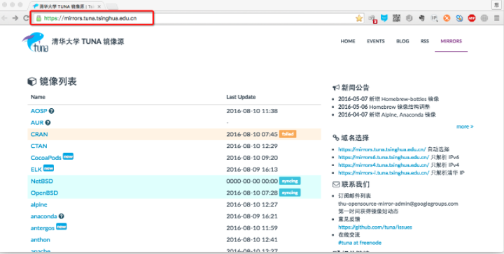

更新Ubuntu软件下载地址
1. 寻找国内镜像源
所谓的镜像源：可以理解为提供下载软件的地方，比如Android手机上可以下载软件的91手机助手；iOS手机上可以下载软件的AppStore



2. 备份Ubuntu默认的源地址
sudo cp /etc/apt/sources.list /etc/apt/sources.list.backup

3. 更新源服务器列表


4. 更新源
做完此步骤之后，就可以进行apt-get install 下载了


Ubuntu软件操作的相关命令
sudo apt-get update 更新源
sudo apt-get install package 安装包
sudo apt-get remove package 删除包
sudo apt-cache search package 搜索软件包
sudo apt-cache show package 获取包的相关信息，如说明、大小、版本等
sudo apt-get install package --reinstall 重新安装包
sudo apt-get -f install 修复安装
sudo apt-get remove package --purge 删除包，包括配置文件等
sudo apt-get build-dep package 安装相关的编译环境
sudo apt-get upgrade 更新已安装的包
sudo apt-get dist-upgrade 升级系统
sudo apt-cache depends package 了解使用该包依赖那些包
sudo apt-cache rdepends package 查看该包被哪些包依赖
sudo apt-get source package 下载该包的源代码
sudo apt-get clean && sudo apt-get autoclean 清理无用的包
sudo apt-get check 检查是否有损坏的依赖